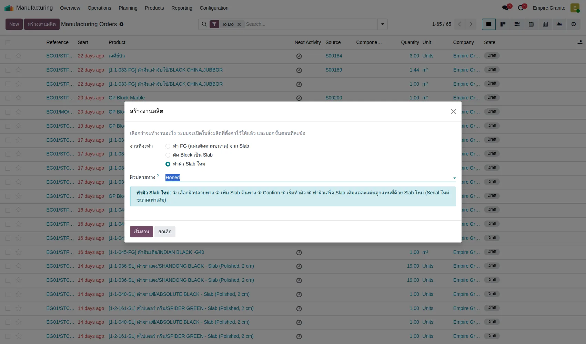
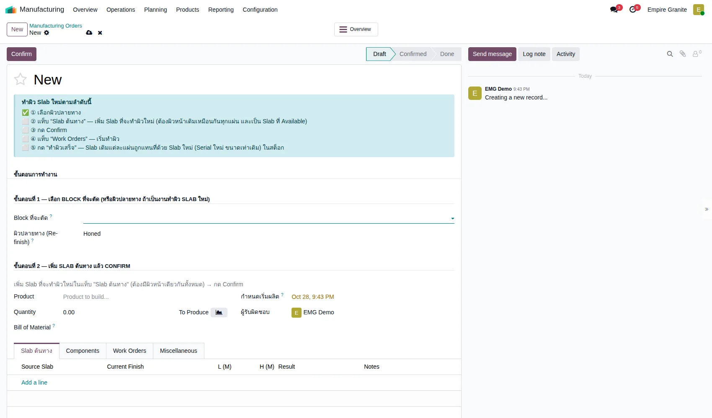
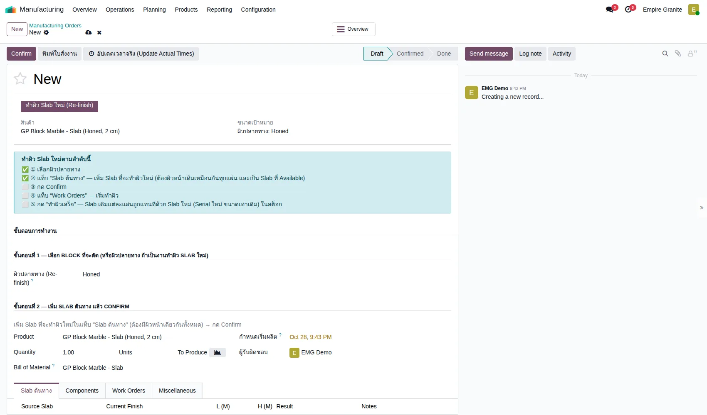
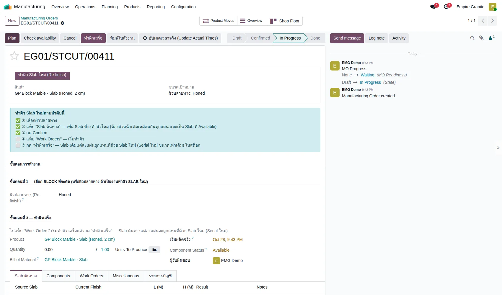
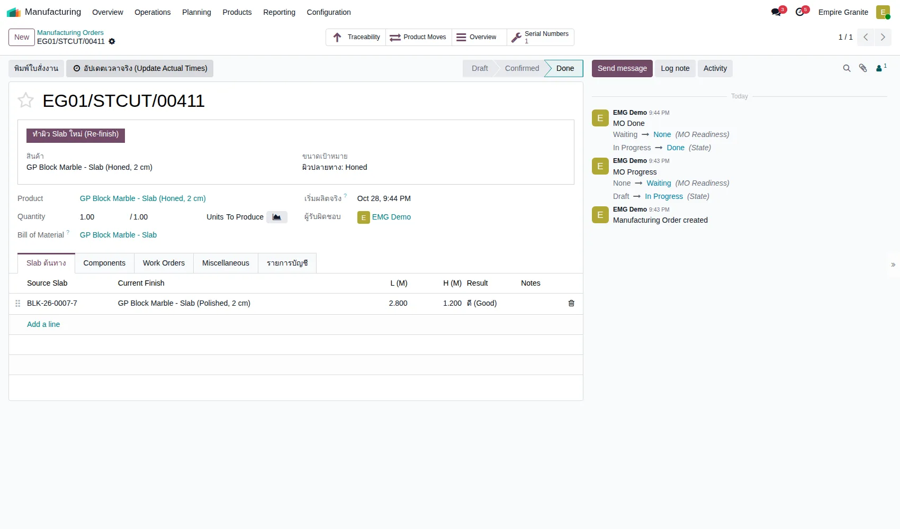

อัปเดตล่าสุด: 28 ตุลาคม 2569 (2026-10-28) · โมดูล stone_slab_inventory 19.0.2.109.47 · ภาพหน้าจอถ่ายจากระบบทดสอบ eg-tst เมื่อ 28 ตุลาคม 2569
บทนี้อธิบายการ ตัด Block เป็น Slab (ใบสั่งตัด หรือ Cut Order) ที่เริ่มจากปุ่ม "สร้างงานผลิต" ซึ่งเป็นทางเข้าเดียวกับงาน FG (บทที่ 38) เมื่อเลือกงานนี้ ใบสั่งผลิตจะมีกล่อง "ตัด Block เป็น Slab ตามลำดับนี้" ที่ติ๊ก ✅ ให้ทีละข้อเมื่อทำครบ จึงดูได้ตลอดว่าทำถึงขั้นไหน
บทนี้อธิบายการ ทำผิว Slab ใหม่ (Re-finish) คือนำ Slab ที่อยู่ในสต็อกอยู่แล้วไปเปลี่ยนผิวหน้า เช่น จาก Polished เป็น Honed โดยเริ่มจากปุ่ม "สร้างงานผลิต" เหมือนบทที่ 38 และ 39 ตอนนี้ทั้ง 3 ประเภทงานมีหน้านำทางแล้ว
1. ทำผิว Slab ใหม่คืออะไร
Slab เดิมแต่ละแผ่นที่ส่งไปทำผิวจะถูกใช้หมด แล้วได้ Slab ใหม่ 1 แผ่น (Serial ใหม่) ที่ผิวใหม่ ขนาดและความหนาเท่าเดิม ระบบจำไว้ว่าแผ่นใหม่มาจากแผ่นไหน และอยู่ใน Block เดิม
2. แนวคิดหลัก 5 ข้อ
- 1 ใบสั่ง = 1 ผิวปลายทาง Slab ทุกแผ่นในใบจะเปลี่ยนไปเป็นผิวเดียวกัน
- Slab ต้นทางต้องผิวเดิมเหมือนกันทุกแผ่น ถ้าเริ่มจากคนละผิว ให้แยกเป็นคนละใบ
- เลือกได้เฉพาะ Slab ที่ยังอยู่ในคลัง Available ช่องเลือกจะแสดงเฉพาะ Slab ที่มีสต็อกในคลัง Available แต่ถ้าแผ่นไหนถูกจองหรือถูกเลือกไว้ในใบเสนอราคา ระบบจะไม่ยอมให้ Confirm และบอกชื่อแผ่นนั้น
- ผิวปลายทางต้องมีใน Material ที่ความหนาเดียวกับแผ่นต้นทาง ถ้าไม่มี ระบบเตือนให้ไปเพิ่ม variant ที่ Material ก่อน
- แผ่นใหม่ไม่ได้ใช้ Serial เดิม เพราะเปลี่ยนสินค้า (ผิวต่างกัน) ระบบตั้งชื่อ Lot ใหม่ต่อท้ายด้วย -RF1, -RF2 ตามลำดับ
3. ภาพรวมขั้นตอน
4. ขั้นตอนทีละหน้าจอ
4.1 เลือกประเภทงานและผิวปลายทาง
กดปุ่ม "สร้างงานผลิต" เลือก "ทำผิว Slab ใหม่" แล้วเลือกผิวปลายทางที่ช่อง "ผิวปลายทาง" จากนั้นกด "เริ่มงาน"

4.2 ใบสั่งผลิตเปิดพร้อมกล่องขั้นตอน
ใบสั่งผลิตเปิดขึ้นพร้อมผิวปลายทางที่เลือกไว้ และกล่อง "ทำผิว Slab ใหม่ตามลำดับนี้" ขั้นที่ทำแล้วขึ้น ✅ ขั้นที่ยังไม่ทำขึ้น ⬜

4.3 เพิ่ม Slab ต้นทาง
ไปแท็บ "Slab ต้นทาง" กด "Add a line" แล้วพิมพ์ชื่อ Slab ที่ต้องการ ช่องแสดงเฉพาะ Slab ที่อยู่ในคลัง Available เมื่อเพิ่มแล้วขั้นที่ ② ขึ้น ✅ และจำนวนในใบเท่ากับจำนวนแถว

ช่องเลือกกรองจากคลังที่แผ่นอยู่ (เร็ว) ส่วนการเช็กว่าแผ่นถูกจองหรือผูกใบเสนอราคาหรือไม่ ทำตอน Confirm เพราะการเช็กทุกแผ่นตอนพิมพ์ช้ามาก (ราว 9 วินาที) ข้อความที่ขึ้นบอกชื่อแผ่นและวิธีแก้ คือเอาแถวนั้นออกหรือปล่อยการจองก่อน
4.4 Confirm
กด Confirm ได้เลย ไม่ต้องย้ายไปสถานีตัด เพราะงานนี้ใช้ Slab ที่ตั้งอยู่ในคลัง Available เดิม ขั้นที่ ③ ขึ้น ✅ และปุ่ม "ทำผิวเสร็จ" โผล่ที่แถบปุ่มด้านบน

ทดลองกด "ทำผิวเสร็จ" โดยไม่เริ่ม Work Order เลย ปิดงานได้ปกติ แท็บ Work Orders ใช้จับเวลาทำงานเท่านั้น
4.5 ทำผิวเสร็จ
กด "ทำผิวเสร็จ" ใบสั่งเป็น Done กล่องขั้นตอนหายไป Slab เดิมถูกใช้หมด ได้ Slab ใหม่ผิวใหม่เข้าคลัง Available

5. สรุปเงื่อนไข
| สถานการณ์ | ระบบทำอย่างไร |
|---|---|
| Confirm โดยไม่มี Slab ต้นทาง | แจ้งให้เพิ่มอย่างน้อย 1 แผ่น |
| Slab ถูกจอง/ผูกใบเสนอราคา/ไม่อยู่ใน Available | ไม่ให้ Confirm บอกชื่อแผ่น และวิธีแก้ |
| Slab ต้นทางมีผิวเดิมต่างกัน | ไม่ให้ Confirm ให้แยกเป็นคนละใบ |
| ผิวปลายทางเหมือนผิวเดิม | ไม่ให้ Confirm เพราะไม่มีอะไรต้องเปลี่ยน |
| Material ไม่มี variant ของผิวนี้ที่ความหนาเดียวกัน | เตือนตั้งแต่เลือก Slab และไม่ให้ Confirm |
| กดทำผิวเสร็จ | ได้ Slab ใหม่ 1 แผ่นต่อ 1 แผ่นต้นทาง ขนาดเท่าเดิม เข้า Available |
6. สิ่งที่เปลี่ยนจากเดิม
| เดิม | ตอนนี้ |
|---|---|
| เลือก "ทำผิว Slab ใหม่" แล้วได้ใบสั่งผลิตเปล่า ต้องรู้เองว่าต้องกรอกอะไร | เลือกผิวปลายทางตั้งแต่หน้าต่างแรก ใบสั่งมีกล่อง 5 ขั้นให้ติ๊ก |
| ช่อง Source Slab เลือกได้ทุก Lot ในระบบ | แสดงเฉพาะ Slab ที่มีสต็อกในคลัง Available |
| ข้อความ "ไม่ได้อยู่ในสถานะ Available" สั้น ไม่บอกสาเหตุ | บอกสาเหตุที่เป็นไปได้ (ถูกจอง ผูกใบเสนอราคา หรือไม่ได้อยู่ใน Available) และวิธีแก้ |
7. คำถามที่พบบ่อย
ต้องย้าย Slab ไปสถานีตัดก่อนไหม
ไม่ต้อง งานนี้ไม่มีปุ่มย้ายไปสถานีตัด Confirm ได้ทันที
ทำผิวหลายแผ่นพร้อมกันได้ไหม
ได้ เพิ่มหลายแถวในใบเดียว ขอเพียงผิวเดิมเหมือนกันทุกแผ่น
แผ่นที่ได้ขนาดเท่าเดิมเสมอไหม
ใช่ ระบบคัดลอกความกว้าง ความยาว ความหนา และ Block จากแผ่นเดิม
คอลัมน์ Result (ดี/เสียหาย) และ Notes ใช้ทำอะไร
ใช้จดบันทึกเอง ตอนนี้ระบบยังไม่ใช้ค่านี้ในการตัดสินว่าแผ่นใหม่จะเป็นแผ่นเสียหรือไม่ ทุกแถวได้แผ่นใหม่ปกติ
8. ข้อจำกัดที่ทราบ
- ทดลองจริง 1 รอบ: 1 แผ่น (BLK-26-0007-7) จาก Polished เป็น Honed สำเร็จ ได้ Lot EG01/STCUT/00411-RF1 หลายแผ่นพร้อมกัน แผ่นที่ถูกจอง และผิวที่ Material ไม่มี ยังไม่ได้ทดลองหน้าจอ (ตามที่ออกแบบไว้ในโค้ด)
- แท็บ Work Orders ของงานนี้ยังแสดงขั้นตอน Move-to-Station และ Gangsaw ซึ่งชื่อไม่ตรงกับงานทำผิว ยังไม่ได้ตรวจว่ามาจากไหน (ไม่กระทบการปิดงาน)
- ช่องเลือกยังเห็น Slab ที่ถูกจองในใบเสนอราคาได้ (ตรวจตอน Confirm)
- ข้อมูลความหนาของแผ่นทดลอง BLK-26-0007 เป็น 0.2 ม. (ตามข้อมูลเก่า) แผ่นใหม่คัดลอกค่าเดิมมา